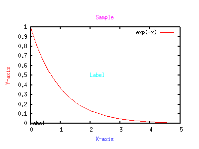

<!DOCTYPE HTML PUBLIC "-//W3C//DTD HTML 4.01 Transitional//EN">
<html lang="ja">
<head>
<title> gnuplot / label (3) </title>
<!-- Generated 2004/ 2/13 -->
<!-- $Id: label3.html,v 1.3 2004/12/17 07:33:39 kawano Exp $ -->
<meta http-equiv="content-type" content="text/html;charset=iso-2022-jp">
<link rel="stylesheet" href="style-new.css" type="text/css">
</head>
<body>

<table width="100%" border="0" cellpadding="0" cellspacing="0">
<tr><td bgcolor="#cccc90" width="320">
    <div align="left">
    <a href="index.html">
    
    </a></div></td>
    <td bgcolor="#cccc90">
      <div align="center"><h3> - not so Frequently Asked Questions - </h3> </div>
      <div class="update"> update 2004/12/13 </div>
    </td>
</tr>
<tr><td bgcolor="#fae8ba"></td>
    <td bgcolor="#fae8ba"><div class="navi"> 
<a href="index.html">           HOME </a> |
<a href="intro/index.html">     INTRODUCTION </a> |
<a href="general.html">         INFORMATION </a> |
<a href="gallery/index.html">   GALLERY </a> |
<a href="label3-e.html">        ENGLISH </a>
</div></td></tr>
</table>
<hr class="topsep">


<table width="100%" border="0" cellpadding="0" cellspacing="0">
<tr><td id="menu">
 <p> not so FAQ</p>
  <ul>
    <li><a href="legend.html">      $BK^Nc(B(Legend) </a>
    <li><a href="tics.html">        $BL\@9(B(Tics) </a>
    <li><a href="label.html">       $B%i%Y%k(B(Label) </a>
    <ul>
      <li><a href="label.html#4.1">
           $B>eIU$-!&2<IU$-E:;z(B </a>
      <li><a href="label.html#4.2">
           $B%.%j%7%cJ8;z(B </a>
      <li><a href="label.html#4.3">
           $B4V3V$ND4@0(B </a>
      <li><a href="label2.html#4.4">
           $B%i%Y%k$N:BI8$O(B </a>
      <li><a href="label2.html#4.5">
           $BLp0u(B </a>
      <li><a href="label3.html#4.6">
           $B%i%Y%k$N?'(B  </a> 
          <a href="version.html"><b>[ver.4]</b></a>
      <li><a href="label3.html#4.7">
           Y$B<4$N8~$-(B </a>
    </ul>
    <li><a href="plot1.html">       2$B<!85%W%m%C%H(B </a>
    <li><a href="plot3d.html">      3$B<!85%W%m%C%H(B </a>
    <li><a href="polar.html">       $B6K:BI8%W%m%C%H(B </a>
    <li><a href="parametric.html">  $BG^2pJQ?tI=<((B </a>
    <li><a href="datafile.html">    $B%G!<%?%U%!%$%k$N?tCM(B </a>
    <li><a href="postproc.html">    $B?^$rIA$$$?$=$N8e$O(B</a>
    <li><a href="misc1.html">       $B$=$NB>(B </a>
  </ul>
 <br>
</td>


<td id="content">


<h1><a name="top"> $B%i%Y%k$"$l$3$l(B  ($B$=$N(B3)</a></h1>

<div align="center">
<a href="label.html">  1 </a> | 
<a href="label2.html"> 2 </a> | 
<a href="label3.html"> 3 </a>
</div>


<h2><a name="4.6">$B%i%Y%k$N?'$rJQ$($i$l$k!)(B </a></h2>
<p class="newver"> [ver.4] ONLY ! </p>

<p> gnuplot 3.8$B$+$i!$%i%Y%k!&I=Bj!&<4L>$N?'$r;XDj$G$-$k$h$&$K$J$C$F$$$^$9!%(B
$B?'$O(B<tt> linetype (lt) </tt>$B$GM?$($^$9!%(B</p>


<pre class="sample">
gnuplot&gt; set style line 1 lt 1
gnuplot&gt; set style line 2 lt 3
gnuplot&gt; set style line 3 lt 4
gnuplot&gt; set style line 4 lt 5
gnuplot&gt; set ylabel "Y-axis" textcolor lt 1
gnuplot&gt; set xlabel "X-axis" textcolor lt 2
gnuplot&gt; set title "Sample" textcolor lt 3
gnuplot&gt; set label "Label" at 2,0.5 textcolor lt 4
gnuplot&gt; plot exp(-x)
</pre>

<div align="center"></div>


<div class="top"><a href="label3.html#top"></a></div>
<h2><a name="4.7">Y$B<4$N%i%Y%k$N8~$-$rJQ$($?$$!%(B</a></h2>

<p> Y$B<4L>$N8~$-$O!$?^$r=PNO$9$kC<Kv$,J8;z$r2sE>$G$-$k$+$I$&$+$K0MB8$7$^(B
$B$9!%2hLL>e$G$O(BY$B<4L>$,?eJ?$K=PNO$5$l$F$b!$Nc$($P(BPostscript$B=PNO$G$O!$(BY$B<4:8(B
$BB&$K?bD>$K$J$j$^$9!%(Bver.4$B$+$i$O!$2hLL=PNO$G$b!$<4L>$,(BY$B<42#$K=P$k$h$&$K$J$C(B
$B$F$$$^$9!%$3$N(BY$B<4L>$NJ}8~$O<+F0E*$K7h$^$j!$$=$l$rD4@0$9$k%*%W%7%g%s$O(B
$BL5$$$h$&$G$9!%(B</p>

<p> Y$B<4L>$r!$G$0U$N0LCV$K9%$-$JJ}8~$G=q$-$?$$$J$i!$(B<tt> set ylabel </tt>
$B$G$OL5$/!$(B<tt> set label </tt>$B$G<4L>$r@_Dj$7$^$9!%Nc$($P!$(Bver.4$B0J9_$N(B
gnuplot$B$G!$<4L>$r(BY$B<42#$K?eJ?$K=q$-$?$$$J$i!$0J2<$N$h$&$K$7$^$9!%(B</p>

<pre class="sample">
gnuplot> set lmargin 20
gnuplot> set label 1 'Y-AXIS' at graph -0.2, graph 0.5
</pre>

<p> graph$B:BI8$rMQ$$!$(BX$BJ}8~$K(B-20&#37;$B0\F0!$(BY$B:BI8$O?^OH$NCf?4$K$J$k$h$&$K(B
$B@_Dj$7$F$$$^$9!%(B</p>

<div class="top"><a href="label3.html#top"></a></div>
</td></tr></table>
<hr class="topsep">


</body>
</html>
